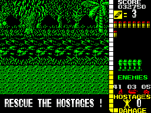

Operation Wolf


| Publisher: | Ocean |
| Price: | £8.95 cass 14.95 disk |
| Year: | 1988 |
| Source: | CRASH, Issue 59 |

An orgy of violence, but no sex (we’re British)
Stand to attention when I’m talking to you soldier! That’s better, now here’s your mission. Use your Uzi submachine gun to blast, mangle and maim your way across a horizontally-scrolling battlefield filled with enemy troops, helicopters, and armoured cars.
Your mission begins with you being parachuted into hostile territory to locate an enemy concentration camp and free the captives held there. You start off with just seven clips of ammo and five grenades — so all you autofire merchants are in trouble. Only real soldiers, with an accurate eye and careful trigger finger need apply here. Your mission is split into six sections, three loads for 48K owners, one massive load for 128K owners. The sections are; Communication Setup, Jungle, Village, Powder Magazine, Concentration Camp and Airport. On each level the landscapes slowly pan before your first-person perspective as you move your cursor sights in search of targets. Pressing fire kicks off the Uzi, while space bar has you lobbing a grenade.

As the landscape scrolls before you, soldiers parachute downwards, others run on firing away, while helicopters, boats and tanks arrive to make things really interesting. Vehicles require numerous shots to be destroyed, unless you use a grenade. As in the arcade there’s also massive Schwarzenegger lookalikes who appear right in front of you aiming a gun. On later levels these wear bullet-proof jackets so you have to hit them in the head. Also requiring fast reactions are the daggers and grenades lobbed at you, these can be shot in mid-air, if you’re quick enough.
To the side of the playing screen is an ammo counter, a damage meter and three icons. The latter inform the player of how many men, tanks, and boats etc have to be destroyed before a sector is cleared. Extra ammo and grenades are available by shooting the relevant icons which appear onscreen, also bullets with an F upon them increase your rate of fire, while bullets with a P decrease the amount of damage inflicted on you. Apart from the human targets, various animals also pop up from time to time, shoot them and occasionally you’ll get food to boost your energy. What you shouldn’t shoot, however, are the nurses and children (terrible temptation) because this drains energy.
If the red tide of your blood fills up the energy meter then the game is over, but thankfully there is a continue play option which restarts the level you’re on if you want. This is allowed only once however.
At first it’s a little tough moving the cursor around and hitting the keyboard grenade key in time. Keys are probably most effective as Phil proved by reaching the sixth and final level and rescuing the hostages (well, one of them). The sprites, despite being monochrome are very well drawn and animated so there’s never any fatal graphic confusions. The real surprise, though, is how the arcade playability has been replicated. Despite finding it much tougher than Phil I was really hooked on it. Search out Operation Wolf when it blasts into your local computer store soon, but I warn you, it won’t take any prisoners.
MARK ... 90%
SUCCESSFUL OPERATION
- Whatever you do, don’t shoot the nurses or you’ll lose energy.
- Collect every available piece of ammunition, especially the grenades.
- Save your grenades for really tight spots and when attacked by a pair of helicopters etc aim between them to destroy both with one shot.
- Keep an eye out for the little bottles of potion which restore your energy.
- The big, butch guys on Level Four can only be shot in the head.
- Always keep an eye on the status read-outs, suddenly finding your Uzi all out of ammo is not a pleasant surprise.
- Shoot enemy grenades and knives before they hit you.
From the very first moment you load it up (and boy does it take a long time on a 128K) you know that this version of Operation Wolf is of the highest quality. Typically atmospheric Jonathan Dunn music (which admittedly is a bit like that on Daley Thompson’s Olympic Challenge) accompanies the title screen. Then before starting your mission, even more 128K tunelets welcome you to the action itself. And what action there is too, all viewed in first-person perspective, as if you were really there. Rapid-firing soldiers positively pour onto the screen by the dozen, sometimes lobbing grenades and knives! While the well-drawn tanks and helicopters are even more dangerous, so it’s just as well that you start with plenty of ammo. The immense playability of the coin-op has really been captured in what must rank as one of the year’s best conversions. Once you start playing it’s almost impossible to tear yourself away. And thankfully, the level of difficulty is pitched just right — even though it’s tough, it isn’t quite impossible — I did manage to complete it (although clever clogs Robin Hogg of TGM (see this month’s special Inter-magazine Challenge) hasn’t yet!). What more could anyone ask for in a shoot-’em-up? — Operation Wolf simply is the business.
PHIL ... 92%
The first thing that hits you is usually a 7.62mm bullet, but after that you tend to notice some super-smooth scrolling and excellent graphics. Blasting sound effects are fine and help make this a really playable arcade conversion. My only reservation is that the gameplay might lack a little variety, but without doubt this is a first class shoot-’em-up and just the ticket for getting rid of all the Christmas time irritation at relatives talking through Indiana Jones And The Temple Of Doom.
STUART ... 90%
THE ESSENTIALS
| Joysticks: | Cursor, Kempston, Sinclair |
| Graphics: | A variety of very well-drawn enemies appear on equally-detailed, smooth horizontally-scrolling backdrops |
| Sound: | An excellent Jonathan Dunn title tune and some very good (and informative) ingame blasting effects |
| Options: | Definable keys. Continue play option |
| General rating: | A great conversion of the popular coin-op which couldn’t be bettered |
| Presentation: | 88% |
| Graphics: | 90% |
| Sound: | 82% |
| Playability: | 90% |
| Addictive qualities: | 88% |
| Overall: | 91% |